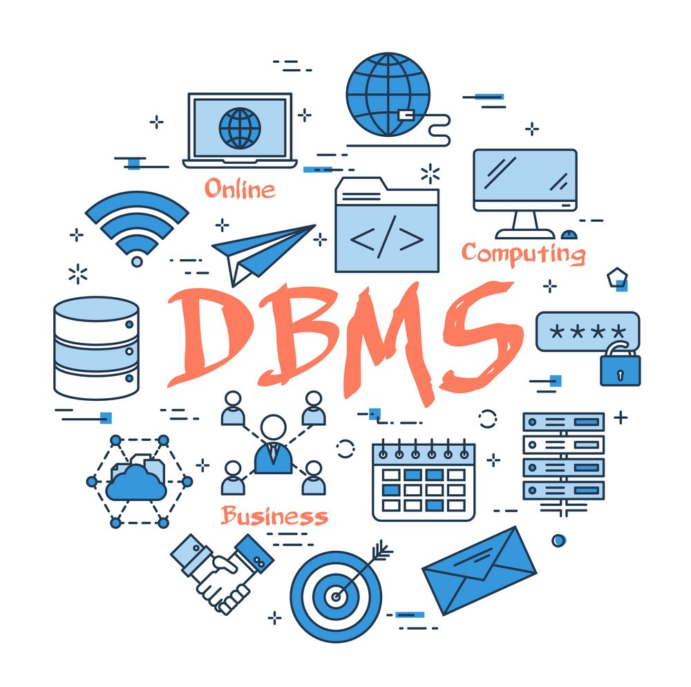

Welcome to our website!
Welcome to our community! We're thrilled you're here. Feel free to explore, share, and connect. Let's learn and grow together. Enjoy the journey! 🎉
This is the Lab Assignment - 1 of Database Management Systems course of our 5th semester. This website is made using html and css only.
Course Structure
Topics
- Introduction
- Database Design and E-R model
- Formal Relation Query Language
- Introduction to SQL
- Relational Database Design
- Storage and File Structure
- Indexing and Hashing
- Query Processing and Optimization
- Transactions
Reference Books
- Avi Silberschatz, Henry F. Korth and S. Sudarshan “Database System Concepts”
- Ramez Elmasri and Shamkant B. Navathe, “Fundamentals of Database Systems”
- Raghu Ramakrishnan and Johannes Gehrke, “Database Management Systems”
Marks Distribution
- Lab ---------------> 10%
- Mid Sem --------> 25%
- Assignments ---> 5%
- Projects ---------> 20%
- End Sem --------> 40%